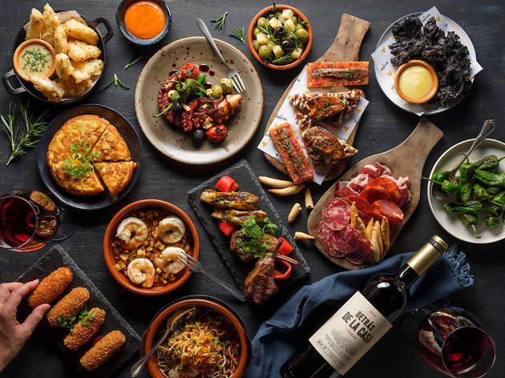

Originally tapas were small plates of food that would be served to customers without charge when they ordered a drink. Although you'll usually find yourself paying for tapas today, there are still some cities, such as Granada, that are known for serving free tapas when you order a drink at the bar. Whenever you're having tapas you'll be sure to find its perfect pair right alongside, most likely a glass of wine or a beer, or even another of Spain's most traditional and refreshing beverages, gazpacho.
The Spanish word “tapa” actually means “lid” or “cover” so how does this relate to food? There are several interesting accounts…
One belief is that the etymology of the word tapa comes from placing an item over the top of a drink to protect it from flies. Somewhere in time it became custom to place small pieces of food on top of the lid and henceforth tapas was born.
Another story is that “tapas” originated around the sixteenth century, when several inn keepers in Castilla discovered that they disguise the taste of bad wine by accompanying the drinks with strong smelling cheese.
The most common theory is that tapas was born when King Alfonso the Tenth (known as The Wise) became ill and had to take small bites of food with some wine. Once the King had recovered from the afflicting disease, he decreed that no wine was to be served in any of the inns unless accompanied with something to eat. This was a wise precaution to counteract the adverse effects of alcohol. Once the “botillerias” (bottle shops) and taverns became established throughout Spain, the King’s decree remained in place.
Whichever theory you believe, the tradition of tapas spread throughout Spain and continues in many countries worldwide today. But if it is authentic tapas you desire, served in the traditional way “para gratis”, then the province of Granada is perhaps the best place to experience a taste of those famous Spanish dishes.